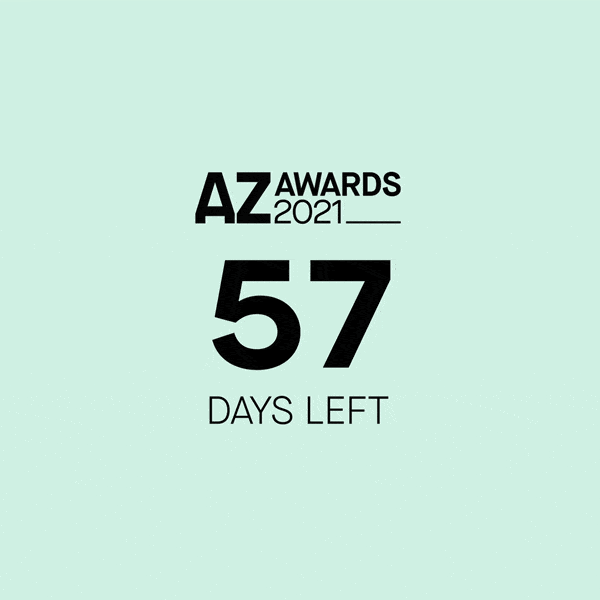
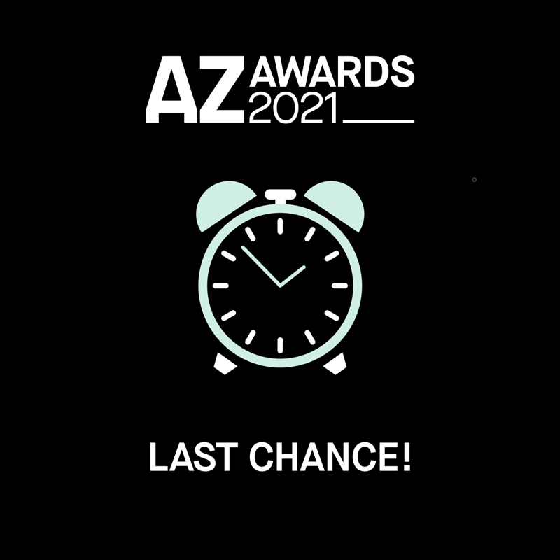
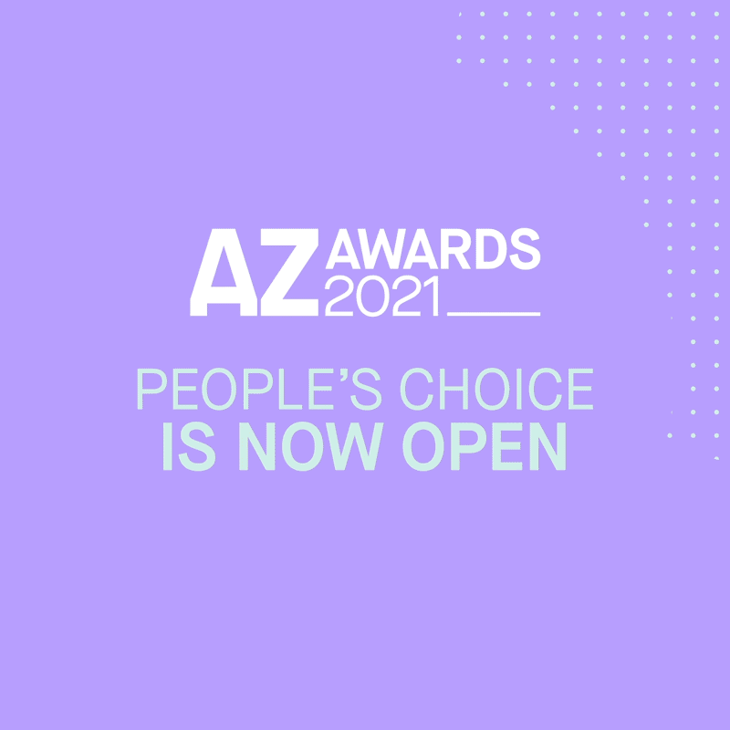

AZ Awards 2021 |
|
A series of motion graphics to promote the annual awards. |
|
Hosted by Azure Magazine, the AZ Awards is an annual awards gala in Toronto that celebrates international architecture and design. The art department was tasked to create a promotional video that explains what the award is about and to encourage submissions for 2021. The look and feel will also determine the branding for the year.
Process
The art team landed on the idea of concentric circles. Not only it creates excitement in motion form, it also represents the idea of a ripple effect. Winning projects are celebrated through various channels, including a magazine feature. The recognition and exposure brings in more opportunities for the winners.
Since I’ve shown interest in exploring motion graphics, I was given the opportunity to create the video. The process allowed me to explore the possibilities with After Effects, and I’m really happy with the end product!
The branding was also carried into social media assets and promotional materials.



